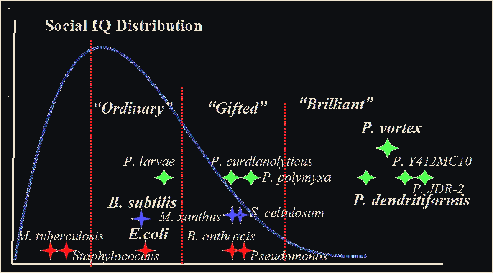

kEngram 3
Social IQ, comparative genomics
P.1 - Fig. 4A-D's combined score
Combined score IQ on the x axis, distribution of bacteria plotted - smart microbes are on the right tail of the distribution.

SAME SCALE - ONTOLOGY NEIGHBORHOOD
SMALLER SCALE - COMPOSED BY
P.1 - Fig. 4A-D
LARGER SCALE - COMPOSES INTO
the deck is a card representation of these pages as well as their entry point on our deck on knowledge
Here we build the lab knowledge culture
not only is connected to kEngrams on the same scale (on the ontology) but they are composed by nodes at other scales
For MVP we click collected there. Later with conditions there. Still only one collec needed to unlock Tools.
one collect anywhere unlocks SELECT - RADIATE - RE-PICK - TRACKER in the ALife Ecology
granted - tools unlocked in the ALife Ecology